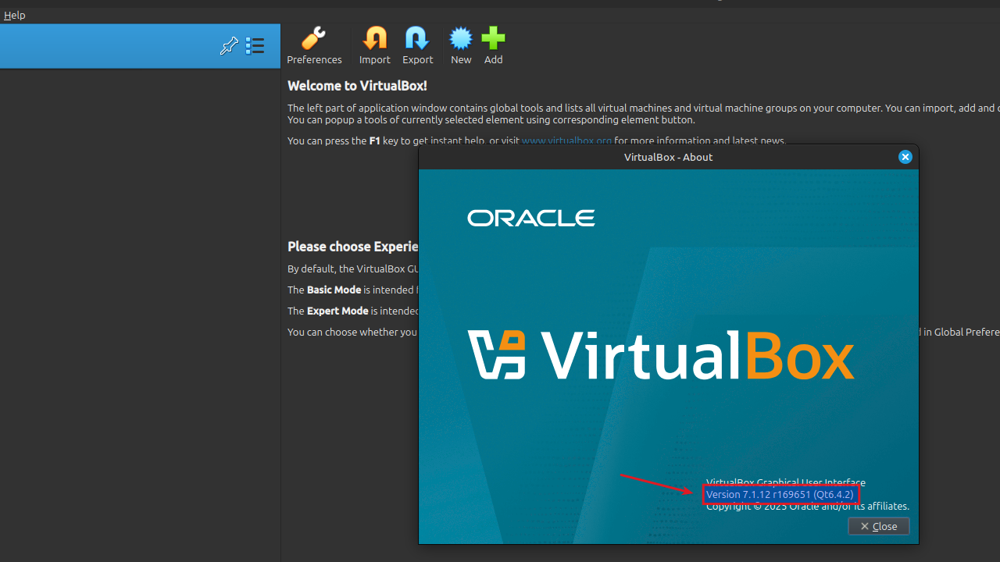

Setup VirtualBox 7 op Linux Mint 22 (.deb pakket)
VirtualBox stelt je in staat om andere besturingssystemen (zoals Windows of een andere Linux-distributie) te draaien als virtuele machines binnen bv. een bestaande Linux Mint 22-omgeving. Dit gebeurt in een geïsoleerde en veilige virtuele omgeving, waardoor je software kunt testen of applicaties kunt gebruiken die niet native op Linux Mint draaien, zonder je hoofdinstallatie te beïnvloeden.
Voordelen van de installatie via een .deb pakket t.o.v. installatie methode1 of methode2 :
kies manueel een specifieke versie
geen afhankelijkheid van repo's
vaste versie; geen automatische updates via APT
Vereisten
Demo
VIDEO
Download pakket
Download het .deb-pakket van de gewenste versie vanaf https://www.virtualbox.org/wiki/Download_Old_Builds
Installeer het pakket
guru@hp:~/Downloads$_ output
Vergrendel de versie ("hold")
Voorkom dat het virtualbox pakket automatisch wordt bijgewerkt door de pakketbeheerder APT.
Wil je later toch upgraden, hef dan de hold op:
Setup Extension Pack (optioneel)
Installeer
Installeren van het Extension Pack is nodig om extra functionaliteit zoals USB 2.0/3.0-ondersteuning, RDP-server, disk-encryptie en PXE boot toe te voegen aan VirtualBox.
Verifieer
Maak de Guest Additions ISO beschikbaar (optioneel)
Het voorzien van de Guest Additions in een virtuele machine zorgt voor betere integratie tussen host en gast, zoals naadloze muisaanwijzer, gedeelde klemborden, schermresolutie-aanpassing en gedeelde mappen.
Voeg gebruiker toe aan vboxusers groep
Voeg je ingelogde gebruiker toe aan de groep vboxusers, zodat die toegang krijgt tot VirtualBox USB-apparaten en bepaalde virtuele hardwarefunctionaliteiten.
Reboot
Start VirtualBox
Klik op Help -> About VirtualBox en controleer de versie.

{kind=link}